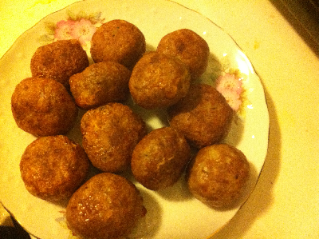

Shami Kabab

Description
Serve in a burger bun, raita, or even by itself. Can't really go wrong. Enjoy!
perfect for party and very popular one.
Ingredients
- 2 pounds ground beef
- 1 tablespoon garlic paste
- 1 tablespoon ginger paste
- 1 teaspoon ground coriander, or more to taste
- 1 teaspoon ground cumin, or more to taste
- ½ teaspoon ground turmeric
- ½ teaspoon garam masala
- ½ teaspoon ground red chile pepper, or to taste
- salt to taste
- ½ cup water
- ½ cup chana dal
- ½ cup chana dal
Breading
- 2 eggs
- 1 tablespoon chopped fresh cilantro
- ½ teaspoon ground red chile pepper, or to taste
- salt to taste
- ¼ cup bread crumbs, or as needed (Optional)
- ¼ cup vegetable oil, or as needed
Steps
- Heat a stockpot over medium heat; add ground beef. Stir in garlic paste, ginger paste, coriander, cumin, turmeric, garam masala, 1/2 teaspoon ground red chile, and salt to taste. Add water and dal; simmer until meat is fully cooked and all water has evaporated, 30 to 35 minutes.
- Blend beef and dal mixture together using an immersion blender in the stockpot. Add 1/2 cup cilantro; blend to combine. Roll spoonfuls of beef and dal mixture into into walnut-sized balls; shape into smooth flat patties.
- Whisk eggs, 1 tablespoon cilantro, 1/2 teaspoon ground red chile, and salt to taste together in a bowl. Place bread crumbs on a plate. Dip each patty into egg mixture, then roll in bread crumbs.
- Heat oil in a skillet over medium heat. Fry patties in a single layer until golden brown and crisp, 2 to 4 minutes per side.
recipe: www.allrecipes.com, Cover Picture: Shima Apu